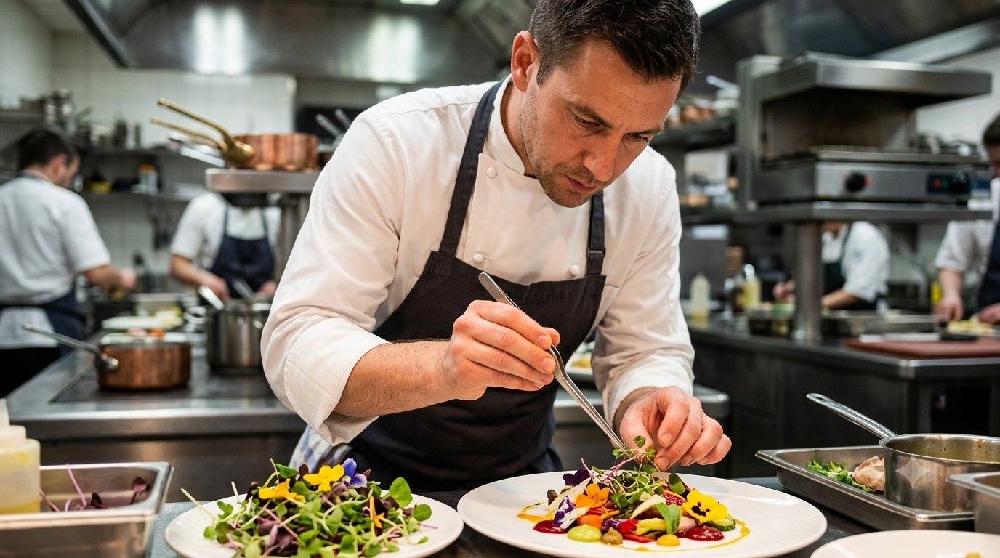

Delight your senses with our chef-crafted seasonal dishes made from fresh, locally sourced ingredients.
Explore MenuFounded with a vision to redefine fine dining, Gusto Bistro brings classic culinary traditions into the modern era. Every dish tells a story of heritage, precision, and passion.
Our master chefs curate weekly menus tailored to harvest cycles, ensuring that every plate served is an unforgettable masterpiece.
